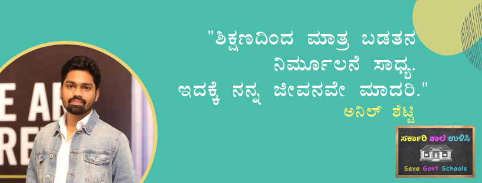
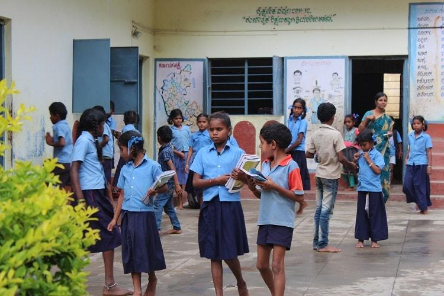
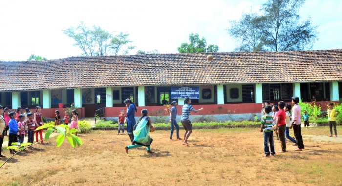

<!doctype html>
<html lang="en">
  <head>
    <meta charset="utf-8">
    <meta name="viewport" content="width=device-width, initial-scale=1">
    <title>Bootstrap demo</title>
    <link href="https://cdn.jsdelivr.net/npm/bootstrap@5.3.0-alpha1/dist/css/bootstrap.min.css" rel="stylesheet" integrity="sha384-GLhlTQ8iRABdZLl6O3oVMWSktQOp6b7In1Zl3/Jr59b6EGGoI1aFkw7cmDA6j6gD" crossorigin="anonymous">
    <link rel="stylesheet" href="om.css">
  </head>
  <body>
    <script src="https://cdn.jsdelivr.net/npm/bootstrap@5.3.0-alpha1/dist/js/bootstrap.bundle.min.js" integrity="sha384-w76AqPfDkMBDXo30jS1Sgez6pr3x5MlQ1ZAGC+nuZB+EYdgRZgiwxhTBTkF7CXvN" crossorigin="anonymous"></script>
  </body>
</html>
<section class="img1">
  <div class="text">
      <span class="textbg">ಸರ್ಕಾರಿ ಶಾಲೆ ಉಳಿಸಿ - Save Govt Schools</span>
  </div>
  <nav class="navbar bg-body-tertiary">
      <div class="container-fluid">
        <a class="navbar-brand" algin="center"> Save GovtSchools ಆಂದೋಲನ</a>
        <form class="d-flex" role="search">
          <input class="form-control me-2" type="search" placeholder="Search" aria-label="Search">
          <button class="btn btn-outline-success" type="submit">Search</button>
        </form>
      </div>
    </nav>
  </section>
<section class="section section-dark">
  <h2>ಆಂದೋಲನ </h2>
  <p>ಅಧ್ಯಾಪಕರು ಬಂದರೂ ಅವರು ತಮ್ಮ ಮೆದುಳನ್ನು ಶ್ರಮಪಡಬೇಕಾಗಿಲ್ಲ; ಪಠ್ಯಪುಸ್ತಕಗಳನ್ನು ವಿವರಿಸುವ ಅಗತ್ಯವಿಲ್ಲದ ಸ್ಥಳೀಯ ಸಿದ್ಧಾಂತಗಳ ಆಧಾರದ ಮೇಲೆ ಪರಿಷ್ಕರಿಸಲಾಗುತ್ತದೆ. ಇದು ಬೋಧನಾ ವೆಚ್ಚವನ್ನು ಸಹ ದೂರ ಮಾಡುತ್ತದೆ. ಉಪಾಹಾರಕ್ಕಾಗಿ ಹೆಚ್ಚುವರಿ ಹಣವನ್ನು ಖರ್ಚು ಮಾಡುವ ಅಗತ್ಯವಿಲ್ಲ ಅಥವಾ ನೈತಿಕ ಮೌಲ್ಯಗಳನ್ನು ಬೆಳೆಸುವ ಬಗ್ಗೆ ಚಿಂತಿಸಬೇಕಾಗಿಲ್ಲ. ತರಗತಿಗಳ ನಡುವೆ ಏಕತೆಯ ಪ್ರತಿಮೆಯನ್ನು ನಿರ್ಮಿಸುವಾಗ ಅರ್ಧ ಬಾಳೆಹಣ್ಣು ತೃಪ್ತಿಕರವಾಗಿದೆ.  </p>

</section>
<section class="img2">
  <div class="text">
      <span class="textbg">Save GovtSchools ಆಂದೋಲನ </span>
  </div>
  

</section>
<section class="section section-dark">
  <h2>Save GovtSchools ಆಂದೋಲನ</h2>
  <p> #SaveGovtSchools ಆಂದೋಲನವು ಕರ್ನಾಟಕದಲ್ಲಿ ರಾಜ್ಯಾದ್ಯಂತ ಅಭಿಯಾನವಾಗಿದೆ . ಇದು ಜುಲೈನಲ್ಲಿ ಪ್ರಾರಂಭವಾಯಿತು. ಈ ಉಪಕ್ರಮವು 12 ನೇ ತರಗತಿಯವರೆಗೆ ಮತ್ತು ಹೆಣ್ಣುಮಕ್ಕಳಿಗೆ ಹೆಚ್ಚುವರಿ 12 + 3 ರವರೆಗೆ ಎಲ್ಲಾ ಸರ್ಕಾರಿ ಶಾಲೆಗಳಲ್ಲಿ ಉಚಿತ ಮತ್ತು ಗುಣಮಟ್ಟದ ಶಿಕ್ಷಣಕ್ಕಾಗಿ ಹೊಸ ಸಮಗ್ರ ರಾಜ್ಯ ಶಿಕ್ಷಣ ನೀತಿಯನ್ನು ರೂಪಿಸಲು ಕೇಳುತ್ತದೆ. ಕುತೂಹಲಕಾರಿಯಾಗಿ, ಇಂಜಿನಿಯರಿಂಗ್ ಮತ್ತು ಮ್ಯಾನೇಜ್‌ಮೆಂಟ್ ಅಧ್ಯಯನಕ್ಕಾಗಿ ಐಐಟಿಗಳು ಮತ್ತು ಐಐಎಂಗಳಂತಹ ಪ್ರಮುಖ ಸಂಸ್ಥೆಗಳು ಇರುವುದರಿಂದ, ಈ ಉಪಕ್ರಮವು ಇದೇ ರೀತಿಯ ಸಂಸ್ಥೆ-IIEd (ಇಂಡಿಯನ್ ಇನ್‌ಸ್ಟಿಟ್ಯೂಟ್ ಆಫ್ ಎಜುಕೇಶನ್) ರಚನೆಗೆ ಪ್ರಯತ್ನಿಸುತ್ತದೆ. ಈ IIEd ಒಂದು ಪ್ರಧಾನ ವಿಶ್ವ ದರ್ಜೆಯ ಶಿಕ್ಷಕರ ತರಬೇತಿ ಸಂಸ್ಥೆಯಾಗಬೇಕಿದೆ</p>

</section>
<div id="carouselExample" class="carousel slide">
  <div class="carousel-inner">
    <div class="carousel-item active">
      
    </div>
    <div class="carousel-item">
      
    </div>
    <div class="carousel-item">
      
    </div>
  </div>
  <button class="carousel-control-prev" type="button" data-bs-target="#carouselExample" data-bs-slide="prev">
    <span class="carousel-control-prev-icon" aria-hidden="true"></span>
    <span class="visually-hidden">Previous</span>
  </button>
  <button class="carousel-control-next" type="button" data-bs-target="#carouselExample" data-bs-slide="next">
    <span class="carousel-control-next-icon" aria-hidden="true"></span>
    <span class="visually-hidden">Next</span>
  </button>
</div>
<section class="section section-dark">
  <h2> ಸರ್ಕಾರಿ ಶಾಲೆಗಳನ್ನು ದತ್ತು ತೆಗೆದುಕೊಳ್ಳಲು ಆಯ್ಕೆ ಮಾಡಿಕೊಳ್ಳಿ</h2>
  <p>ಭಾರತದಲ್ಲಿ ಮಕ್ಕಳಿಗೆ ಶಿಕ್ಷಣದ ಪ್ರವೇಶವನ್ನು ಹೆಚ್ಚಿಸುವ ಪ್ರಯತ್ನದಲ್ಲಿ ಭಾರತ ಸರ್ಕಾರವು ಶ್ರಮಿಸುತ್ತಿದೆ. ವಾಸ್ತವವಾಗಿ, ಇದು 1949 ರಿಂದ ಸಾರ್ವತ್ರಿಕ ಶಿಕ್ಷಣಕ್ಕಾಗಿ ತನ್ನ ಗಡುವನ್ನು ತಳ್ಳುತ್ತಿದೆಯೆಂದರೆ ಅದು ಅಂತಹ ಪರಿಪೂರ್ಣತಾವಾದಿಯಾಗಿದೆ. ಲಾಭವನ್ನು ಹುಡುಕುವ ಜಿಗಣೆಗಳು ಶಿಕ್ಷಣ ಕ್ಷೇತ್ರವನ್ನು ಪ್ರವೇಶಿಸಲು ಅವಕಾಶ ನೀಡುವುದು ವೆಚ್ಚವನ್ನು ಕಡಿಮೆ ಮಾಡುವುದು ಮತ್ತು ಕಲಿಕೆಯ ಫಲಿತಾಂಶಗಳನ್ನು ಸುಧಾರಿಸುವುದು ಹಿಂದಿನ ಎಲ್ಲಾ ಪ್ರಗತಿಗೆ ಅಡ್ಡಿಯಾಗುತ್ತದೆ. ಎನ್‌ಇಪಿ ಮತ್ತು ಸರ್ಕಾರಿ ಶಿಕ್ಷಣದ ಹಿಂದೆ ನಾವು ನಮ್ಮ ಎಲ್ಲ ಬೆಂಬಲವನ್ನು ನೀಡಬೇಕು ಮತ್ತು ಅವರು ಪೋಷಕರ ಪರ್ಸ್ ಸ್ಟ್ರಿಂಗ್‌ಗಳನ್ನು ಕಟ್ಟುವಂತೆ ಪ್ರಾರ್ಥಿಸಬೇಕು.</p>

</section>
<section class="img3">
  <div class="text">
      <span class="textbg">ನಲಿ ಕಲಿ ಕನ್ನಡ</span>
  </div>

</section>
<section class="section section-dark">
  <h2> ಶಿಕ್ಷಣ</h2>
  <p>ಭಾರತದಲ್ಲಿ ಮಕ್ಕಳಿಗೆ ಶಿಕ್ಷಣದ ಪ್ರವೇಶವನ್ನು ಹೆಚ್ಚಿಸುವ ಪ್ರಯತ್ನದಲ್ಲಿ ಭಾರತ ಸರ್ಕಾರವು ಶ್ರಮಿಸುತ್ತಿದೆ. ವಾಸ್ತವವಾಗಿ, ಇದು 1949 ರಿಂದ ಸಾರ್ವತ್ರಿಕ ಶಿಕ್ಷಣಕ್ಕಾಗಿ ತನ್ನ ಗಡುವನ್ನು ತಳ್ಳುತ್ತಿದೆಯೆಂದರೆ ಅದು ಅಂತಹ ಪರಿಪೂರ್ಣತಾವಾದಿಯಾಗಿದೆ. ಲಾಭವನ್ನು ಹುಡುಕುವ ಜಿಗಣೆಗಳು ಶಿಕ್ಷಣ ಕ್ಷೇತ್ರವನ್ನು ಪ್ರವೇಶಿಸಲು ಅವಕಾಶ ನೀಡುವುದು ವೆಚ್ಚವನ್ನು ಕಡಿಮೆ ಮಾಡುವುದು ಮತ್ತು ಕಲಿಕೆಯ ಫಲಿತಾಂಶಗಳನ್ನು ಸುಧಾರಿಸುವುದು ಹಿಂದಿನ ಎಲ್ಲಾ ಪ್ರಗತಿಗೆ ಅಡ್ಡಿಯಾಗುತ್ತದೆ. ಎನ್‌ಇಪಿ ಮತ್ತು ಸರ್ಕಾರಿ ಶಿಕ್ಷಣದ ಹಿಂದೆ ನಾವು ನಮ್ಮ ಎಲ್ಲ ಬೆಂಬಲವನ್ನು ನೀಡಬೇಕು ಮತ್ತು ಅವರು ಪೋಷಕರ ಪರ್ಸ್ ಸ್ಟ್ರಿಂಗ್‌ಗಳನ್ನು ಕಟ್ಟುವಂತೆ ಪ್ರಾರ್ಥಿಸಬೇಕು.</p>

</section>
<section class="img4">
  <div class="text">
      <span class="textbg">ಭಾಷೆಯ ಇತಿಹಾಸ</span>
  </div>

</section>
<section class="section section-dark">
  <h2>ಕನ್ನಡ ಸಾಹಿತ್ಯದ ಪ್ರಾಚೀನತೆ</h2>
  <p>ಭಾರತದಲ್ಲಿ ಮಕ್ಕಳಿಗೆ ಶಿಕ್ಷಣದ ಪ್ರವೇಶವನ್ನು ಹೆಚ್ಚಿಸುವ ಪ್ರಯತ್ನದಲ್ಲಿ ಭಾರತ ಸರ್ಕಾರವು ಶ್ರಮಿಸುತ್ತಿದೆ. ವಾಸ್ತವವಾಗಿ, ಇದು 1949 ರಿಂದ ಸಾರ್ವತ್ರಿಕ ಶಿಕ್ಷಣಕ್ಕಾಗಿ ತನ್ನ ಗಡುವನ್ನು ತಳ್ಳುತ್ತಿದೆಯೆಂದರೆ ಅದು ಅಂತಹ ಪರಿಪೂರ್ಣತಾವಾದಿಯಾಗಿದೆ. ಲಾಭವನ್ನು ಹುಡುಕುವ ಜಿಗಣೆಗಳು ಶಿಕ್ಷಣ ಕ್ಷೇತ್ರವನ್ನು ಪ್ರವೇಶಿಸಲು ಅವಕಾಶ ನೀಡುವುದು ವೆಚ್ಚವನ್ನು ಕಡಿಮೆ ಮಾಡುವುದು ಮತ್ತು ಕಲಿಕೆಯ ಫಲಿತಾಂಶಗಳನ್ನು ಸುಧಾರಿಸುವುದು ಹಿಂದಿನ ಎಲ್ಲಾ ಪ್ರಗತಿಗೆ ಅಡ್ಡಿಯಾಗುತ್ತದೆ. ಎನ್‌ಇಪಿ ಮತ್ತು ಸರ್ಕಾರಿ ಶಿಕ್ಷಣದ ಹಿಂದೆ ನಾವು ನಮ್ಮ ಎಲ್ಲ ಬೆಂಬಲವನ್ನು ನೀಡಬೇಕು ಮತ್ತು ಅವರು ಪೋಷಕರ ಪರ್ಸ್ ಸ್ಟ್ರಿಂಗ್‌ಗಳನ್ನು ಕಟ್ಟುವಂತೆ ಪ್ರಾರ್ಥಿಸಬೇಕು.</p>

</section>


</body>
</html>
         
    
